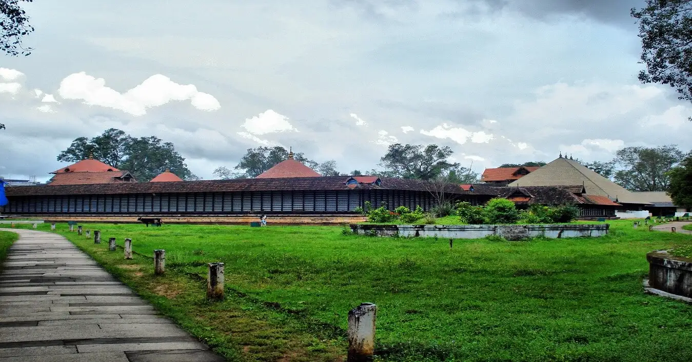
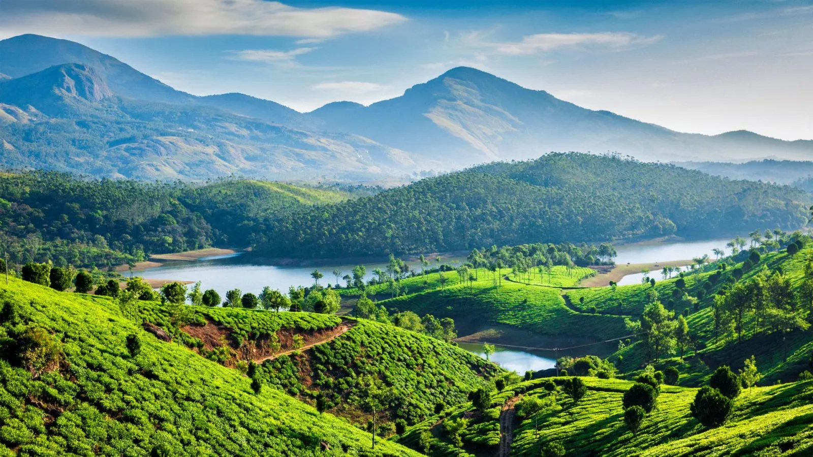

Home
Places To Visit
Tourism Statistics
About
Tour Kerala
"God's Own Country"
Kerala, located in the southwestern region of India, is known as "God's Own Country" due to its natural beauty and diverse cultural heritage.Kerala's tourism industry has grown rapidly in recent years, attracting millions of visitors from all over the world.One of the main attractions in Kerala is its stunning natural scenery. With palm-lined beaches, lush green mountains, serene backwaters, and picturesque waterfalls, Kerala's natural beauty is unmatched.Tourists can take a leisurely cruise on a houseboat along the backwaters, go trekking in the Western Ghats, or relax on the pristine beaches of Kovalam, Varkala, or Cherai.The architecture, cuisine, and festivals of Kerala reflect this diversity. Some of the popular cultural experiences in Kerala include visiting the ancient temples of Guruvayur and Sabarimala, attending a Kathakali dance performance, or indulging in the delicious local cuisine.The state's history dates back to ancient times, and it has been influenced by a wide range of cultures and religions, including Hinduism, Christianity, and Islam.Kerala's tourism industry has been successful due to its diverse attractions, government support, and sustainable tourism practices.

Kerala's tourism industry has had a significant impact on the state's economy. The industry has provided employment opportunities for millions of people, particularly in the service sector. The state's tourism revenue has also contributed significantly to the state's GDP, making it an essential source of income for the government.Kerala's tourism industry has been successful due to its diverse attractions that cater to different types of travelers. For nature lovers, Kerala's wildlife reserves, including Periyar National Park and Silent Valley National Park, offer opportunities for trekking and wildlife safaris. Adventure enthusiasts can enjoy water sports such as kayaking, canoeing, and white-water rafting. In recent years, the Kerala government has focused on promoting sustainable tourism practices. The state has implemented eco-tourism initiatives that focus on responsible tourism practices, environmental conservation, and community participation. The state has also encouraged the development of homestays and community-based tourism initiatives to promote local tourism and empower local communities.

The state has become a hub for medical tourism, offering high-quality medical treatments and procedures at a fraction of the cost in Western countries.Kerala's tourism industry has faced some challenges, particularly due to the COVID-19 pandemic. The pandemic has resulted in a significant decrease in the number of visitors, leading to a decline in revenue for the tourism sector. However, the Kerala government has taken measures to promote domestic tourism and ensure the safety of visitors by implementing strict COVID-19 protocols.In recent years, the Kerala government has focused on promoting sustainable tourism practices.Kerala's tourism industry has also embraced digital technology to enhance the visitor experience. The state has developed mobile apps and web portals that provide tourists with information on tourist destinations, transportation, and accommodations.These platforms also allow visitors to book tours, activities, and accommodations, making it easier for tourists to plan their trip.
The industry has supported the restoration and preservation of historic monuments and cultural sites, including the Mattancherry Palace, the Jewish Synagogue, and the Padmanabhapuram Palace. The industry has also helped to promote and preserve traditional art forms, such as Kathakali, Mohiniyattam, and Kalaripayattu.Kerala's tourism industry has also been recognized globally for its efforts to promote sustainable tourism practices. The state has won several international awards for sustainable tourism, including the UNWTO Ulysses Award for Innovation in Public Policy and Governance. In conclusion, Kerala's tourism industry has become a model for sustainable tourism practices, digital innovation, and cultural preservation. The state's natural beauty, cultural richness, and commitment to sustainable development have made it a must-visit destination for travelers seeking an authentic and meaningful experience. Kerala's tourism industry will continue to grow and evolve, contributing to the state's economy and promoting responsible tourism practices.